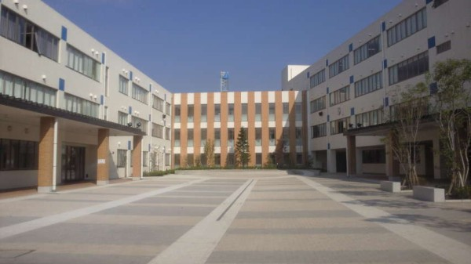

プロフィール
趣味
通っていた学校
通っていた学校
野比小学校
田舎の中にある学校で遠足なども川や山に出掛けることが多く伸び伸びと
した小学校生活を送ることが出来る学校でした。
長沢中学校
山の中にある学校でいつも授業中鳥の鳴き声や虫の鳴き声を聞きながら
授業を受けられ生徒も同じ小学校からの持ち上がりが多くみんな仲良し
の中学校でした。
湘南学院

部活動はどの部活も盛んで学校行事などでは芸術鑑賞会でお笑い芸人を
招いてネタを披露するなど楽しみが多い学校でした。